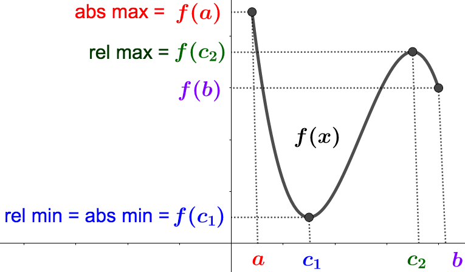
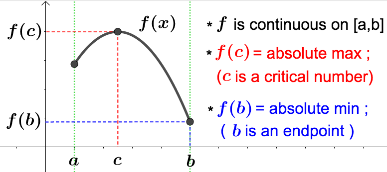
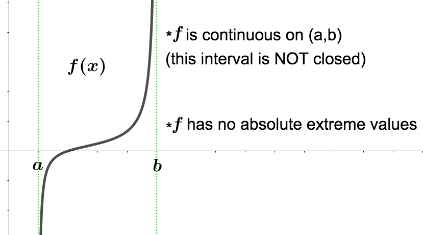
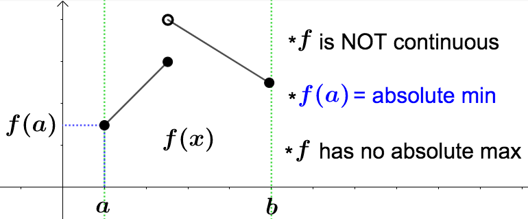
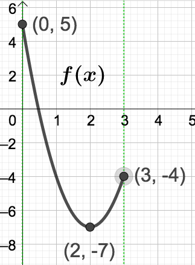
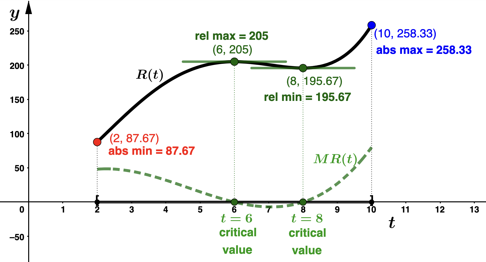
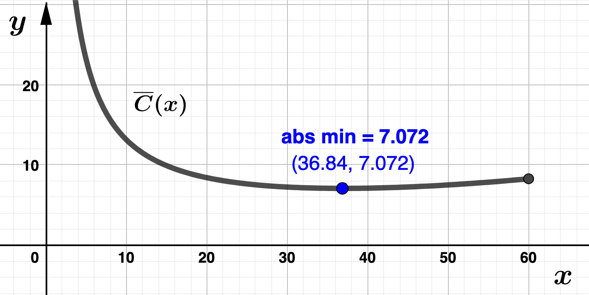

Section 3.9 Absolute Extrema
In most optimization problems, one is interested in finding the absolute, as opposed to relative, extreme values of a function. So now we will be looking for more than "peaks" and "valleys" on the graph of function. What we want to determine is the absolute largest and absolute smallest output values of a function, if they exist.
See the graph below for a comparison of relative and absolute extreme values of \(f\text{.}\)

Notice that \(f\) in the above graph does indeed have a largest (\(f(a)\)) and smallest (\(f(c_1)\)) output value. It is those values we are interested in finding. Observe that the absolute maximum occurred at an endpoint of the graph, and not a "peak," so to speak. In other words, we have an absolute maximum value of \(f\) that is NOT a relative maximum value of \(f\) (relative extreme values cannot occur at endpoints). On the other hand, \(f(c_1)\) is both an absolute and relative minimum. Notice that in this case, the absolute minimum value of \(f\) occurred at a critical number inside the interval \([a,b]\text{.}\)
Not every function will have an absolute maximum and/or absolute minimum value (for instance, think of \(f(x) = x^3\) on the entire real line). The following theorem tells us when we can be certain these absolute extreme values exist.
Theorem 3.9.2. Extreme Value Theorem.
A continuous function on a closed, bounded interval will have an absolute maximum value and an absolute minimum value on that interval.In Theorem 3.9.2 "continuous function" means that the function has no jumps or holes in its graph. All polynomials are continuous everywhere. "Closed, bounded interval" means the interval contains its endpoints and both endpoints are finite values. In other words, intervals of the form \([a,b]\text{,}\) where \(a\) and \(b\) are both real numbers, \(a < b\text{.}\) The above theorem tells us that every polynomial will have absolute extreme values on every closed and bounded interval.
Below are some pictures illustrating why it is necessary that \(f\) be continuous and the interval be closed and bounded for \(f\) to be guaranteed to have absolute extreme values.



The Extreme Value Theorem tells us when we can expect a function to have absolute extreme values. Below are a couple useful results that will help us find them.
Fact 3.9.3.
If \(f\) is continuous on \([a,b]\) and \(f(c)\) is an absolute extreme value, then \(c=a\text{,}\) \(c=b\text{,}\) or \(c\) is a critical number between \(a\) and \(b\) (see the first graph above).This fact tells us that under the assumptions of Theorem 3.9.2, the absolute extreme values can only occur at critical numbers or endpoints of intervals.
Theorem 3.9.4. Critical Number Theorem.
Let \(I\) be ANY interval and suppose \(f\) has exactly one critical number in \(I\text{.}\)- If \(f(c)\) is a relative maximum, then \(f(c)\) is an absolute maximum.
- If \(f(c)\) is a relative minimum, then \(f(c)\) is an absolute minimum.
Example 3.9.5.
\(f\) is a polynomial defined on the closed bounded interval \([0,3]\text{,}\) so must have absolute extreme values by Theorem 3.9.2. To find them, we first get the critical numbers of \(f\text{.}\) Since \(f'(x) = 6x -12\text{,}\)
\begin{align*}
f'(x) \amp = 0 \\
6x - 12 \amp = 0
\end{align*}
which gives \(x=2\) as the only critical value. By Fact 3.9.3, all we need to do to find the absolute extreme values is evaluate \(f\) at the critical number, the endpoints of the interval, and compare: - \(\displaystyle f(0) = 3(0)^2 -12(0) + 5 =5\)
- \(\displaystyle f(2) = 3(2)^2 -12(2) + 5= -7\)
- \(\displaystyle f(3) = 3(3)^2 -12(3) + 5= -7= -4 \)

Example 3.9.6.
\begin{equation*}
R(t) = \dfrac{1}{4}t^4 -\dfrac{14}{3}t^3 +24t^2 + 25
\end{equation*}
where \(t=0\) corresponds to the year 2013. Round all output values to two decimal places. - Write the domain of \(R(t)\) using interval notation. Solution.Since the model is valid between the years 2015 and 2023 and \(t=0\) corresponds to the year 2013, dom(\(R\))\(= [2,10] \)
- Find and interpret VL Consultants' marginal revenue in 2017. Solution.Since 2017 corresponds to \(t=4\text{,}\) we need to find and interpret \(MR(4)\text{.}\) Taking the derivative of \(R(t)\text{,}\) the marginal revenue function is\begin{equation*} MR(t) = t^3-14t^2+48t. \end{equation*}Evaluating, we have \(MR(4) = 32\text{,}\) which means that in 2017, VL Consultants' revenue was increasing at an approximate rate of $3,200,000 per year. That is, VL Consultants expects to genreate an additional $3,200,000 in 2018 as comparted to 2017.
- Find the critical values for \(R(t)\) and identify the years to which they correspond. Solution.We solve the following for \(t\text{:}\)\begin{align*} MR(t) \amp = 0 \\ t^3-14t^2+48t \amp = 0 \\ t(t^2-14t+48) \amp = 0 \\ t(t-6)(t-8) \amp = 0 \end{align*}which has three solutions, \(t = 0, 6, 8\text{.}\) Since \(t=0\) is not in the domain (see part (a)), we find two critical numbers: \(t = 6, 8\) which correspond the years 2019 and 2021 respectively.
- Find the and interpret the relative extreme values of \(R(t)\text{.}\) Solution.We use the second derivative test:\begin{align*} MR(t) \amp = t^3-14t^2+48t \\ R''(t) \amp = 3t^2 -28t + 48 \end{align*}Evaluating at the critical numbers, we have
- \(R''(6) = -12 < 0 \) which means \(t=6\) gives a relative maximum value for \(R(t)\text{.}\)
- \(R''(8) = 16 > 0\) which means \(t=8\) gives a relative minimum value for \(R(t)\text{.}\)
- VL Consultants had a relative maximum revenue in 2019 (\(t=6\)) of $20,500,000
- VL Consultants had a relative minimum revenue in 2021 (\(t=8\)) of $19,567,000
- Find the and interpret the absolute extreme values of \(R(t)\text{.}\) Solution.First observe that \(R(t)\) is a continuous function (it's a polynomial) defined on the closed and bounded interval \([2,10]\text{.}\) So, by Theorem 3.9.2 \(R(t)\) must achieve its absolute extreme values. To find them, we use Fact 3.9.3. That is, we evaluate \(R(t)\) at the critical numbers (which was done in the previous part) and endpoints of the interval.
- \(\displaystyle R(2) = 87.67\)
- \(\displaystyle R(6) = 205 \)
- \(\displaystyle R(8) = 195.67 \)
- \(\displaystyle R(10) = 258.33\)
- VL Consultatns had an absolute minimum revenue of $8,767,000 in 2015 (\(t=2\)).
- VL Consultatns had an absolute maximum revenue of 25,833,000 in 2023 (\(t=10\)).
- Graphical exploration. Graph \(R(t)\) and \(MR(t)\) labeling all points that correspond to extreme values and critical numbers. Make sure you understand how the graphs relate to your work above. Solution.
Example 3.9.7.
We are asked to find the absolute maximum value of Fawlty Towers' profit function, \(P\text{.}\) We begin by determing the price, \(p\text{,}\) and quantity, \(q\text{,}\) models for room rentals. Using \(d=\) price increase (in dollars) as the input variable we are given
- \(p(d) = 80 + d\text{,}\) and
- \(\displaystyle q(d) = 300-d\)
\begin{align*}
R(d) \amp = (p(d))(q(d)) \\
R(d) \amp = (80 + d)(300-d) \\
R(d) \amp = -d^2 + 220d +24,000.
\end{align*}
Next recall that cost = (cost per unit)(number of units) + (fixed costs). Since we are not given any fixed costs, the cost model,\(C\text{,}\) is
\begin{align*}
C(d) \amp = 22(q(d)) + 0 \\
C(d) \amp = 22(300-d) \\
C(d) \amp = -22d +6,600.
\end{align*}
With revenue and cost determined,
\begin{align*}
P(d) \amp = R(d) - C(d) \\
P(d) \amp = (-d^2 + 220d +24,000) - (-22d +6,600) \\
P(d) \amp = -d^2 + 242d + 17,400.
\end{align*}
Finally, we determine that absolute maximum value of \(P(d)\) on the interval \([0,300]\text{.}\) As usual, we need the critical value of \(P(d)\text{.}\) We solve
\begin{align*}
P'(d) \amp = 0\\
-2d + 242 \amp = 0
\end{align*}
so that \(d=121\) is the only critical number of \(P(d)\text{.}\) Since \(P''(121) = -2 < 0\text{,}\) the second derivative test tells us that \(d=121\) gives a relative maximum. Since \(d=121\) is the only critical number in \([0,300]\text{,}\) Theorem 3.9.4 tells us that the relative maximum will also be an absolute maximum. Evaluating at \(d=121\text{,}\) we find \(p(121) = 201\) and \(P(121) = 32,041\text{.}\) Hence Fawlty Towers should charge $201 for a room to obtain a maximum profit of $32,041.Example 3.9.8.
\begin{equation*}
C(x) = .001x^3 +3x +100,
\end{equation*}
and no more than 60,000 earbuds can be produced in a year. How many sets of wireless earbuds should ADTF Distributors manufacture in order to minimize their average cost per set? What is the minimum average cost? Solution.Let's first find the average cost function, \(\overline{C}(x)\text{:}\)
\begin{align*}
\overline{C}(x) \amp = \dfrac{C(x)}{x} \\
\\
\overline{C}(x) \amp = \dfrac{.001x^3 +3x +100}{x} \\
\\
\overline{C}(x) \amp = .001x^2 +3 + \dfrac{100}{x} \\
\\
\overline{C}(x) \amp = .001x^2 +3 + 100x^{-1}
\end{align*}
We are asked to minimize \(\overline{C}(x)\) on the interval \((0,60]\) (why is this the relevant interval?). We start by finding the critical numbers. Since
\begin{equation*}
\overline{C}'(x) = .002x - 100x^{-2},
\end{equation*}
we solve the following equation for \(x\text{:}\)
\begin{align*}
.002x - 100x^{-2} \amp = 0 \\
\\
.002x - \dfrac{100}{x^{2}} \amp = 0 \\
\\
.002x \amp = \dfrac{100}{x^{2}} \\
\\
.002x^3 \amp = 100 \\
\\
x^3 \amp = 50,000 \\
\\
x \amp = \sqrt[3]{50,000} \\
\\
x \amp \approx 36.84
\end{align*}
Next we use the second derivative test to determine if \(x=36.84\) produces a relative minimum value for \(\overline{C}(x)\text{.}\) Since
\begin{equation*}
\overline{C}''(x) = .002+200x^{-3} = .002 + \dfrac{200}{x^3}
\end{equation*}
we find that \(\overline{C}''(36.84) = .002 + \dfrac{200}{36.84^3} > 0 \) which means \(x = 36.84\) gives a relative minimum value for \(\overline{C}(x)\text{.}\) Since \(x = 36.84\) is the only critical number in \((0,60]\text{,}\) Theorem 3.9.4 tells us that the relative minimum will also be an absolute minimum. This means ADTF Distraibutors should produce 36,840 sets of wireless earbuds to minimize the average cost per set. Their minimum annual average cost is $7,072 per thousand sets of wireless earbuds (or $7.07 per set). 